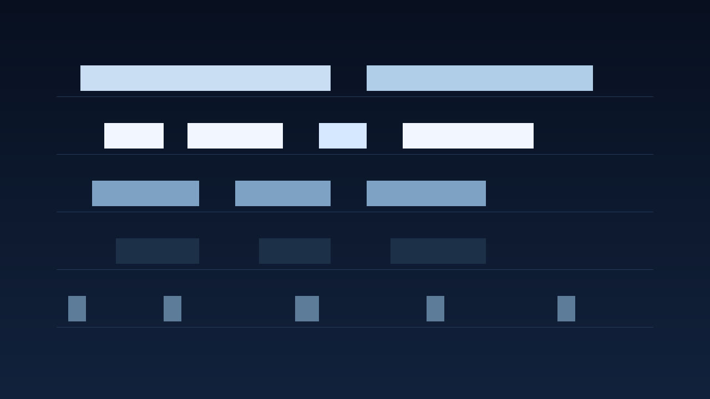

Four kits · two variations · 32-bar arrangements
Glass Harbor
Lyrical original motifs, gentle tension, rhythmic foundations, and spacious melodic development. The BPM range is a project choice, not a claim that these files are authentic genre productions.

pad lead keys bass drums
Reading the MIDI.
Drums use channel 10 and the map in this catalog. Bass is monophonic, MIDI 28 to 52. Keys are MIDI 48 to 79, at most four notes. Lead is monophonic, MIDI 60 to 86. Pad is MIDI 45 to 76, at most four notes. C4 is 60.
Kit map
- k01 Glass Harbor, 128 BPM, D major, tonic D. Parts are 8 bars. The arrangement is 32 bars. Glass Harbor is 128 BPM in D major. Lead A states D5 F#5 A5, turns G5 F#5 E5 D5, lifts B4 C#5 D5 F#5, and settles E5 D5 A4. Keys A arpeggiate Dmaj7 spelled D4 F#4 A4 C#5, Gmaj7 spelled G3 B3 D4 F#4, Bm7 spelled B3 D4 F#4 A4, and A6 spelled A3 C#4 E4 F#4. The pad holds Dmaj7 spelled D3 F#3 A3 C#4, Gmaj7 spelled G3 B3 D4 F#4, Bm7 spelled B2 D3 F#3 A3, and A6 spelled A2 C#3 E3 F#3. Bass A sounds D2 A2, then G2 D3, then B1 F#2, then A1 E2. Variation B changes every role: the lead starts after the downbeat, the keys become stabs, the bass walks eighths with one C2, the pad enters late, and the kick moves to half time. Limitations: Variation A and variation B are alternatives. Do not stack them. Do not mix parts from different kits: the tempos and collections differ. The 32-bar arrangement uses variation A only. Keys are chords or broken chords. The lead is one line. Closed and open hats never overlap, and no hat-choke controller is written.
- k02 Soft Lantern, 132 BPM, A dorian, tonic A. Parts are 8 bars. The arrangement is 32 bars. Soft Lantern is 132 BPM in A dorian. Lead A waits one beat, then states C5 D5 E5, holds G5 E5, turns D5 C5 A4, holds B4, then spells A4 C5 E5 F#5 and falls E5 D5 C5 A4. Keys A hold Am7 spelled A3 C4 E4 G4, G6 spelled G3 B3 D4 E4, F#m7b5 spelled F#3 A3 C4 E4, and Em7 spelled E3 G3 B3 D4. The pad answers on beat 3 with three-note subsets of those chords. Bass A holds A1 E2, G1 D2, F#1 C2, and E1 B1, one note per bar. Variation B breaks the keys into offbeat eighths and gives the lead long tones, including one C#5 outside A dorian. Limitations: Variation A and variation B are alternatives. Do not stack them. Do not mix parts from different kits: the tempos and collections differ. The 32-bar arrangement uses variation A only. Keys are chords or broken chords. The lead is one line. Closed and open hats never overlap, and no hat-choke controller is written.
- k03 Wide Meadow, 136 BPM, F lydian, tonic F. Parts are 8 bars. The arrangement is 32 bars. Wide Meadow is 136 BPM in F lydian. The B natural is the raised fourth, written as an ordinary note. Lead A leaps F5 to C6, then A5, and later spells D5 B4 G4 before F4. Keys A hold Fmaj7#11 spelled F3 A3 C4 B4, Cmaj7 spelled C4 E4 G4 B4, G6 spelled G3 B3 D4 E4, Dm7 spelled D3 F3 A3 C4, and a return to Fmaj7#11 spelled F3 A3 C4 B4. Pad A uses three-note subsets: Fmaj7#11 spelled F3 C4 B4, Cmaj7 spelled C4 E4 B4, G6 spelled G3 D4 E4, Dm7 spelled D3 F3 C4, and Fmaj7#11 spelled F3 A3 B4. Bass A pulses the root in eighths and sounds the fifth on beat 3, returning to F2 A2 C3 F2 in bar 8. Variation B moves the keys into the second half of the bar and walks the bass in offbeats, with one Bb2. Limitations: Variation A and variation B are alternatives. Do not stack them. Do not mix parts from different kits: the tempos and collections differ. The 32-bar arrangement uses variation A only. Keys are chords or broken chords. The lead is one line. Closed and open hats never overlap, and no hat-choke controller is written.
- k04 Night Window, 126 BPM, B natural minor, tonic B. Parts are 8 bars. The arrangement is 32 bars. Night Window is 126 BPM in B natural minor. There is no raised leading tone in variation A. Lead A starts on beat 3 with D5, then C#5 B4 G4, holds A4, lifts E5, and ends F#4. Keys A break tenths in quarter notes: bar 1 spells B3 F#4 D4 B3. The pad enters on beat 2 and holds Bm add9 spelled B3 D4 F#4 C#5, Gmaj7 spelled G3 B3 D4 F#4, Em7 spelled E3 G3 B3 D4, and F#m7 spelled F#3 A3 C#4 E4. Bass A sounds three offbeat sixteenths: B1 F#2 B1, then G1 D2 G1, E1 B1 E1, and F#1 C#2 F#1. Variation B answers with eighth-note lead cells, dyad keys, half-note bass, and one A#4 in the pad. Limitations: Variation A and variation B are alternatives. Do not stack them. Do not mix parts from different kits: the tempos and collections differ. The 32-bar arrangement uses variation A only. Keys are chords or broken chords. The lead is one line. Closed and open hats never overlap, and no hat-choke controller is written.
There is no reference-only part. Drums, bass, keys, lead, and pad are core. The arrangements reuse those files. Variation A of each role has its own attack pattern. The four kits are not transpositions of one phrase.
Article draft
DRAFT. Dream Trance is a note-only MIDI construction kit
Tags: midi, trance, music-production, composition, dream-trance
Use either the combined arrangement or the separate parts. Do not stack the part files on top of the combined file.
Files
| Part | Role | Var | Count | BPM | Bars | Notes |
|---|---|---|---|---|---|---|
| k01.drums.a | drums | a | core | 128 | 8 | 114 |
| k01.bass.a | bass | a | core | 128 | 8 | 16 |
| k01.keys.a | keys | a | core | 128 | 8 | 64 |
| k01.lead.a | lead | a | core | 128 | 8 | 14 |
| k01.pad.a | pad | a | core | 128 | 8 | 16 |
| k01.drums.b | drums | b | core | 128 | 8 | 56 |
| k01.bass.b | bass | b | core | 128 | 8 | 32 |
| k01.keys.b | keys | b | core | 128 | 8 | 56 |
| k01.lead.b | lead | b | core | 128 | 8 | 21 |
| k01.pad.b | pad | b | core | 128 | 8 | 48 |
| k02.drums.a | drums | a | core | 132 | 8 | 88 |
| k02.bass.a | bass | a | core | 132 | 8 | 8 |
| k02.keys.a | keys | a | core | 132 | 8 | 16 |
| k02.lead.a | lead | a | core | 132 | 8 | 18 |
| k02.pad.a | pad | a | core | 132 | 8 | 24 |
| k02.drums.b | drums | b | core | 132 | 8 | 112 |
| k02.bass.b | bass | b | core | 132 | 8 | 16 |
| k02.keys.b | keys | b | core | 132 | 8 | 32 |
| k02.lead.b | lead | b | core | 132 | 8 | 12 |
| k02.pad.b | pad | b | core | 132 | 8 | 16 |
| k03.drums.a | drums | a | core | 136 | 8 | 65 |
| k03.bass.a | bass | a | core | 136 | 8 | 32 |
| k03.keys.a | keys | a | core | 136 | 8 | 32 |
| k03.lead.a | lead | a | core | 136 | 8 | 19 |
| k03.pad.a | pad | a | core | 136 | 8 | 15 |
| k03.drums.b | drums | b | core | 136 | 8 | 152 |
| k03.bass.b | bass | b | core | 136 | 8 | 32 |
| k03.keys.b | keys | b | core | 136 | 8 | 64 |
| k03.lead.b | lead | b | core | 136 | 8 | 24 |
| k03.pad.b | pad | b | core | 136 | 8 | 24 |
| k04.drums.a | drums | a | core | 126 | 8 | 64 |
| k04.bass.a | bass | a | core | 126 | 8 | 24 |
| k04.keys.a | keys | a | core | 126 | 8 | 32 |
| k04.lead.a | lead | a | core | 126 | 8 | 10 |
| k04.pad.a | pad | a | core | 126 | 8 | 16 |
| k04.drums.b | drums | b | core | 126 | 8 | 72 |
| k04.bass.b | bass | b | core | 126 | 8 | 16 |
| k04.keys.b | keys | b | core | 126 | 8 | 32 |
| k04.lead.b | lead | b | core | 126 | 8 | 32 |
| k04.pad.b | pad | b | core | 126 | 8 | 32 |
Arrangements
| Kit | BPM | Bars | What the file contains |
|---|---|---|---|
| k01 | 128 | 32 | Glass Harbor variation A arranged over 32 bars. Bars 1-8 are drums and pad. Bars 9-16 add bass and keys. Bars 17-24 add the lead. Bars 25-32 keep drums, pad, bass, and lead, and leave the keys out. Each musical track is one or more copies of the 8-bar part, placed at the listed bar offsets. |
| k02 | 132 | 32 | Soft Lantern variation A arranged over 32 bars. Bars 1-8 are drums and pad. Bars 9-16 add bass and keys. Bars 17-24 add the lead. Bars 25-32 keep drums, pad, bass, and lead, and leave the keys out. Each musical track is one or more copies of the 8-bar part, placed at the listed bar offsets. |
| k03 | 136 | 32 | Wide Meadow variation A arranged over 32 bars. Bars 1-8 are drums and pad. Bars 9-16 add bass and keys. Bars 17-24 add the lead. Bars 25-32 keep drums, pad, bass, and lead, and leave the keys out. Each musical track is one or more copies of the 8-bar part, placed at the listed bar offsets. |
| k04 | 126 | 32 | Night Window variation A arranged over 32 bars. Bars 1-8 are drums and pad. Bars 9-16 add bass and keys. Bars 17-24 add the lead. Bars 25-32 keep drums, pad, bass, and lead, and leave the keys out. Each musical track is one or more copies of the 8-bar part, placed at the listed bar offsets. |
Recorded reading
Bars 17-24 of the Glass Harbor arrangement. Eight bars at 128 BPM. Variation A of drums, bass, keys, lead, and pad. The encoded MP3 is 15.047 seconds. preview, not a master. The film is 15.000 seconds and shows preview, not master.
No program changes are encoded. A conventional GM player will normally use its default piano program for pitched channels unless configured otherwise; compatible GM channel 10 percussion is treated separately. Player behavior may vary.
No human listening audition was performed for this build.
The GitHub repository is https://github.com/mizcausevic-dev/dream-trance and it is public. The catalog page is https://mizcausevic-dev.github.io/dream-trance/ .